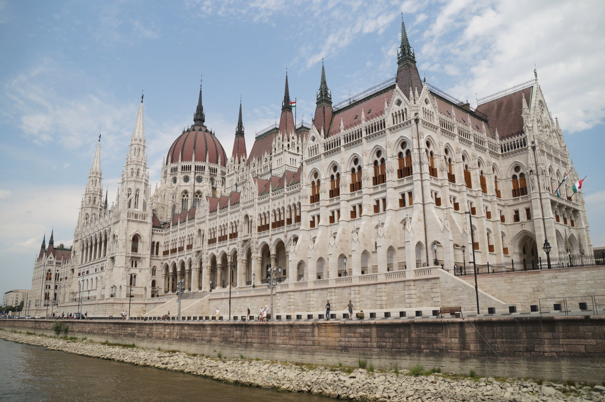

Будапешт
#europe #hungary #budapest В один из зимних вечеров, мы с женой размышляли, куда бы поехать на отдых. Мы точно знали, что очень хочется туда где плещется море и греет солнце и желательно подольше. Решили ехать в Хорватию на месяц. Так как решение принималось уже ближе к весне, многие аппартаметы уже были заняты. Поэтому пришлось бронировать трое аппартаментов в разных частях побережья и во время отдыха переезжать из одних в другие. Скажу честно, в последствии мы ни разу не пожалели о таком решении. Но Хорватия стоит отдельного рассказа, а сейчас про Будапешт.
На осмотр Будапешта у нас было отведено два дня. Для беглого осмотра этого достаточно, но не для полноценного знакомства с городом и венгерской культурой. Мне Будапешт представлялся небольшим уютным европейским городком, немного мистическим, по известному произведению Брэма Стокера. Оказался он не таким уж небольшим, очень уютным и да, какая-то мистика пристуствует в деталях.
Впечатления от посещения Будапешта остались только самые положительные. Город очень зацепил своей архитектурой, уютными улочками. Будапешт - живой, местами даже очень. Каждый может найти место себе по душе. Есть спокойные умиротворенные места, где можно спокойно посидеть, расслабиться и отдохнуть от суеты. А есть площади с ревущей музыкой, толпой веселых зажигающих людей и кучей баров.
Глядя на архитектуру в памяти всплывают Вена и Санкт-Петербург, но, в отличие от них, здесь нет того имперского размаха, напротив, улочки чуть более узкие, дома чуть менее высокие и в целом как-то теплее и уютнее.
В Будапеште самое старое метро в континентальной Европе (если убрать оговорку "континентальной", то лондонское метро выходит на первое место). Старые станции метро - практически на поверхности. Это удобно, спуск и выход из метро не занимают так много времени.
Приехали мы в Будапешт поздно вечером, со стороны Кошице. Радушная хозяйка нас заселила, провела вводную беседу, рассказав что где как и почем, снабдила картой города и мы отправились спать. Про аппартаменты, в которых мы останавливались нужно сказать отдельно. Квартира находится в консульском квартале на улице Андраши. Вокруг одни консульства и дип. представительства, поэтому район тихий спокойный и благополучный. Улица засажена высоченными липами и после дождя запах необыкновенный.
Для того, чтобы попасть в квартиру нужно сперва зайти в подъезд с мраморным полом, через высоченную деревянную дверь. Пройдя подъезд, выйти во внутренний двор. Во внутреннем дворе найти дверь за кованой металлической решеткой, как в замке. Открыть решетку и по винтовой лестнице подняться на второй этаж и уже тут будет дверь в квартиру. Сама квартира не очень большая, есть кухня со всем необходимым, спальня с большой двухместной кроватью, на которой мы без проблем помещались втроем с ребенком, небольшая гостинная с диванчиком, душ и туалет. Romantic Garden Art Studio near Andrassy Avenue
Ввиду того, что мы приехали в выходной, мы оставили машину прямо перед подъездом. В выходные парковка бесплатная. В понедельник я переставил машину на площадь Героев. Там огромная бесплатная парковка. Пешком до квартиры - минут 15 ходьбы.
Утром мы отправились за продуктами. В двух кварталах от квартиры есть средних размеров супермаркет Spar. Там мы все и закупили. Плотно позавтракав, отправились изучать Будапешт.
Начать решили с Зоопарка. Что еще нужно ребенку для счастья? Зоопарк очень достойный (сравниваю с Москвой и Санкт-Петербургом. В Берлине и Праге зоопарки прошли мимо нашей экскурсионной программы). Особенно запомнились кенгуру, зебры, маленький слоненок, носороги и жирафы. Крокодила приходится выискивать в зарослях, но так даже интереснее. Кто первый кого найдет: ты его или он тебя :-). Кенгуру вальяжно лежат на траве, облакотившись на локоть. Белые мишки купаются в бассейне. Есть лавочки и места для отдыха. В жаркие дни включают разбрызгиватели, под которыми можно охладится. Такие же стоят по всему городу, в туристических местах. Я почему-то думал что в Будапеште сильной жары не будет и сильно ошибся. За один день венгерское солнышко оставило на моих руках такой загар, что только ко второй неделе в Хорватии он более менее выравнялся.
Там же в зоопарке мы познакомились с местным деликатесом под названием Кюртеш-калач. Такая местная мягкая булочка с корицей цилиндрической формы. Свежий калач - вкуснотища! Из национальной кухни обязательно попробуйте Гуляш. Это традиционное венгерское блюдо и здесь оно подается как густой наваристый суп. Очень часто готовят его из дичи.
Название города Будапешт происходит из названий двух других городов Буды и Пешта, которые были объединены в конце XIX века. Стоят они на противоположных берегах Дуная и смотрят друг на друга. Вода в Дунае мутная зеленая и ни разу не прозрачная. Может быть только летом так. Сам Дунай широкий и с него открывается живописный вид на город. Ходят экскурсионные кораблики, а также обычные речные трамвайчики. На таком трамвайчике мы и прокатились. Правда уплыли в самый конец Будапешта на конечную, где пришлось ждать около получаса, пока трамвайчик пойдет обратно. И кстати остановки этого трамвайчика на нашей карте и в реальности прилично отличались, так что каким-то чудом мы все-таки высадились там, где нам было нужно. А нужно нам было в Буду.
В Буде у рыбацкого бастиона у нас начиналась экскурсия по городу. Мы не учли перепад высот и в итоге появились перед экскурсоводом с языком на плече еле живые. В качестве рекламы или просто по дружески, очень рекомендую для обзорных экскурсий по городу проект 15:15. Мы уже сполна оценили их гидов в Будапеште и Риге. Приятная цена, гиды - русские, которые живут в этом городе, всегда в одно и то же время вне зависимости от количества туристов. В нашем случае у нас была индивидуальная экскурсия, потому что кроме нас в этот день никто не пришел.
Остров, Купальни, Токай, Мадьяры, 1000 лет мадьярам, немецкий язык


Я не буду писать много о шопинге в Европе, но скажу честно, что такого я не ожидал. Вышли мы из торгового центра с четырьмя большими пакетами. За те же деньги, за которые у нас можно купить одну кофту или куртку, там можно купить штуки три (без преувеличения), и качество этих вещей будет выгодно отличаться от наших. Я уже не говорю о том, что можно приехать в сезон скидок, а еще и вернуть на границе tax free. Как раз вчера мы ходили в наш торговый центр. Покупать вещи, я вам скажу, морально, стало сложнее. Жаба, после того что ты видишь в Европе, подросла и окрепла.
После торгового центра мы зашли на местную ярмарку. Настоящую, с пряниками, медовухой и праздничной атмосферой. Представляю, что здесь творится перед Рождеством. Прогулявшись еще немного по старому Дрездену, мы отправились на ужин. Ресторан мы выбирали заранее на tripadvisor.ru, выбирали именно немецкую кухню. Выбор пал на Schillergarten. Несмотря на то, что до ресторана от центра надо было ехать, мы ни разу не пожалели о своем выборе. Очень клевая атмосфера и отличная кухня. Я заказал половину свиной рульки и мне принесли именно половину рульки здорового кабана, чего я, мягко говоря, не ожидал, после русских ресторанных порций. Цены – приемлемые, а при учете размеров порций – низкие. С удовольствием посетим заведение снова, при первой же возможности.